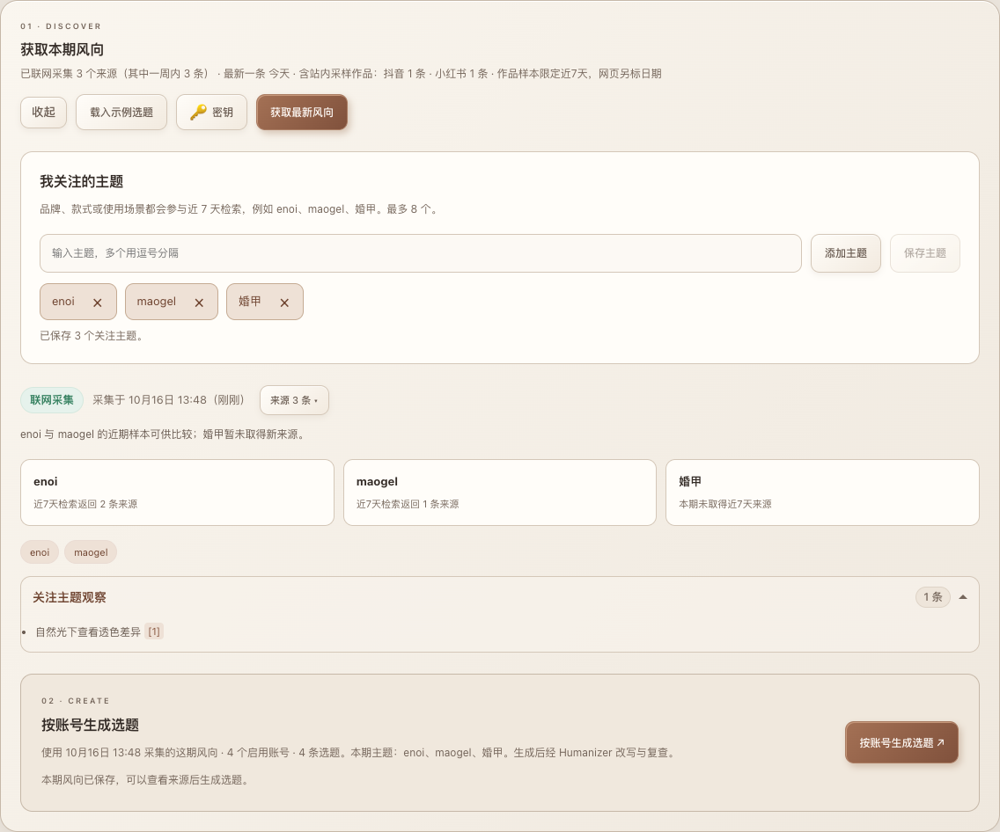
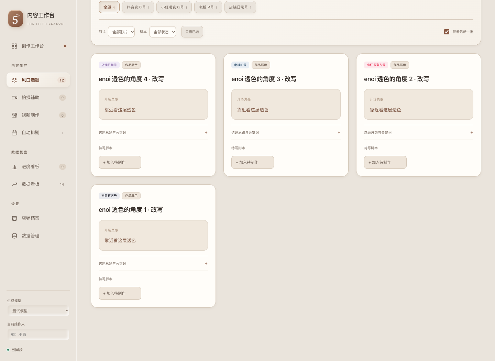
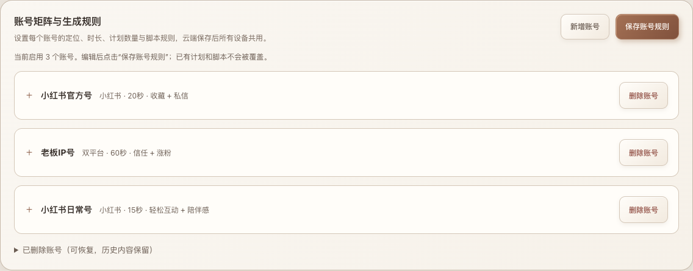
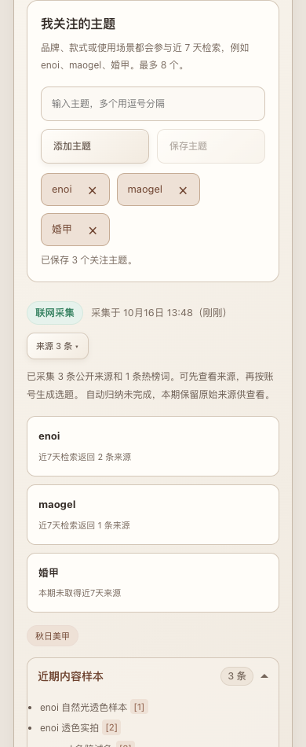
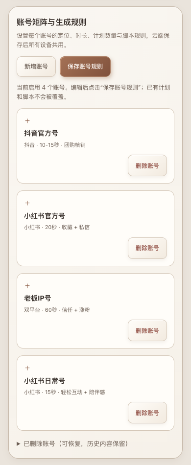

先找到值得关注的内容，再决定怎么拍。
加入品牌、款式或场景，获取这一期的近期作品与热点。查看来源后，按各账号定位生成选题，经 Humanizer 改写与复查再入库。
本页是隔离测试数据的浏览器截图，enoi、maogel、婚甲的结果仅用于演示，不代表真实热点或实际采集结果。





加入品牌、款式或场景，获取这一期的近期作品与热点。查看来源后，按各账号定位生成选题，经 Humanizer 改写与复查再入库。
本页是隔离测试数据的浏览器截图，enoi、maogel、婚甲的结果仅用于演示，不代表真实热点或实际采集结果。




